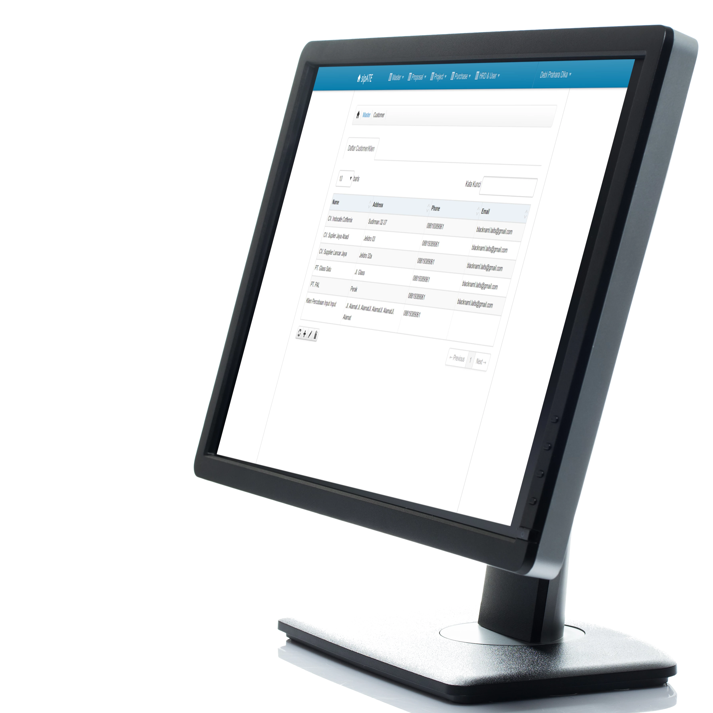
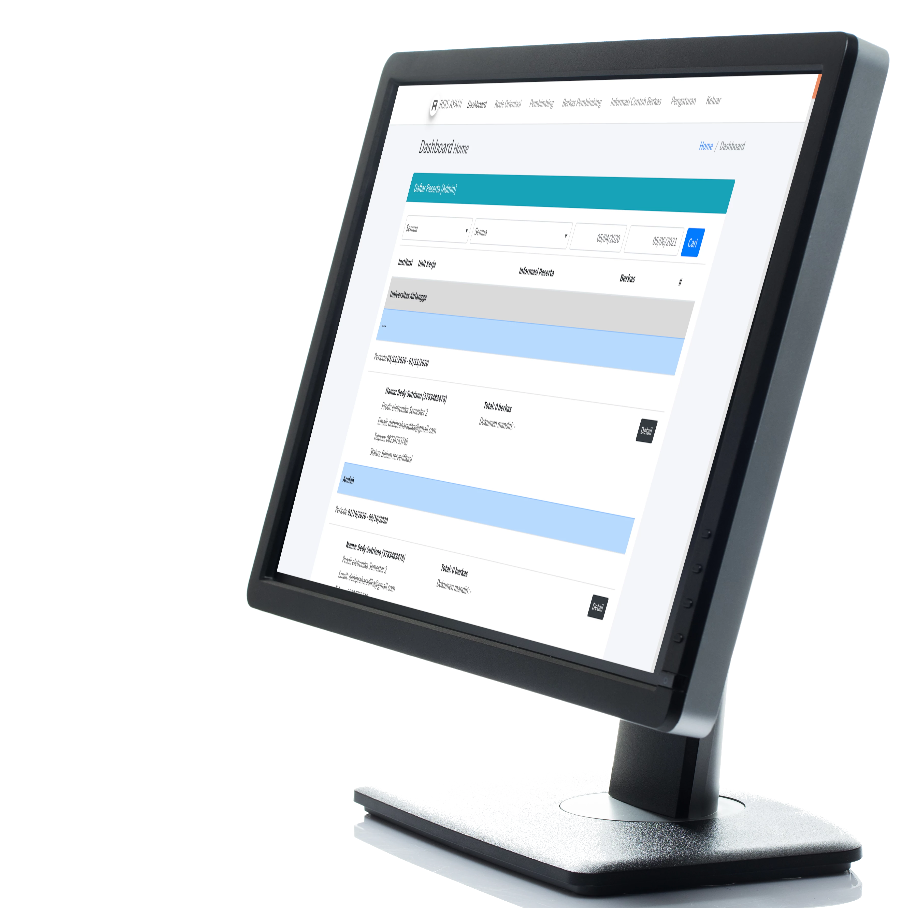

Produk yang Berdampak
Lihat Produk-produk Menarik Kami

Aplikasi Web SIM Diklat Kordik KEP Rumah Sakit
Solusi digital khusus untuk mengelola pelatihan dan pendidikan medis di lingkungan rumah sakit (Kordik KEP).
Sederhanakan alur kerja administratif, pantau kemajuan peserta, dan pastikan bahwa semua data sertifikasi dan pelatihan dikelola dengan aman serta mudah diakses untuk keperluan audit.
-
Alur Kerja yang Lancar
Dirancang khusus untuk memenuhi kebutuhan administrasi di bidang kesehatan. -
Pemantauan Real-time
Lihat perkembangan dan status sertifikasi secara sekilas. -
Pengelolaan Data yang Aman
Standar keamanan tingkat tinggi untuk melindungi data organisasi yang sensitif.

Aplikasi Web Sistem Informasi Manajemen Proyek SIMAPRO
Sederhanakan siklus hidup proyek Anda dengan alat manajemen yang andal. Mulai dari perencanaan awal hingga penyerahan akhir, SIMAPRO memastikan setiap tonggak pencapaian dipantau dan tercapai dengan tepat.
Dirancang untuk mendukung skalabilitas dan kolaborasi, platform ini membantu tim tetap selaras, mengelola sumber daya secara efisien, dan memantau dengan jelas semua tugas yang sedang berjalan.
-
Sangat Mudah Digunakan
Antarmuka yang intuitif, dirancang untuk pengalaman pengguna yang lancar. -
Dokumentasi yang Jelas
Tersedia panduan lengkap dan dokumentasi teknis. -
Antarmuka Pengguna yang Fleksibel
Desain yang sepenuhnya responsif dan dapat menyesuaikan diri dengan perangkat atau alur kerja apa pun.

Aplikasi Web SIM Pemberkasan SISAN
SISAN (Sistem Informasi Pemberkasan) adalah solusi berbasis web modern yang dirancang untuk mendigitalisasi dan mengotomatisasi seluruh alur administrasi praktek kerja lapangan. Sistem ini menghubungkan peserta didik, pembimbing klinis/lapangan, dan admin institusi secara terpadu demi alur koordinasi yang transparan dan bebas kertas (paperless).
Dengan fitur unggulan pengelolaan berkas persyaratan, penentuan jadwal rotasi secara presisi, serta ruang diskusi terintegrasi pada setiap dokumen, SISAN meminimalkan risiko berkas hilang atau salah koordinasi dan mempercepat proses kelulusan.
-
Kemudahan Unggah & Verifikasi Berkas
Peserta didik dapat mengunggah dokumen administrasi (KTP, panduan, logbook) secara mandiri untuk diverifikasi langsung oleh pembimbing secara digital. -
Penjadwalan Rotasi & Ruangan Presisi
Memilih jadwal rotasi dan ruangan praktek kerja secara mandiri lewat kalender interaktif guna mencegah tabrakan kuota ruangan. -
Ruang Diskusi & Catatan Revisi Terintegrasi
Fitur chat dua arah di setiap dokumen untuk mempermudah instruksi revisi antara peserta didik dan pembimbing secara real-time dan terdokumentasi.